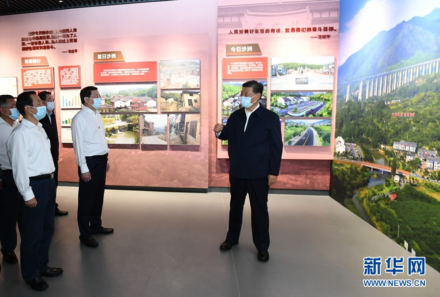
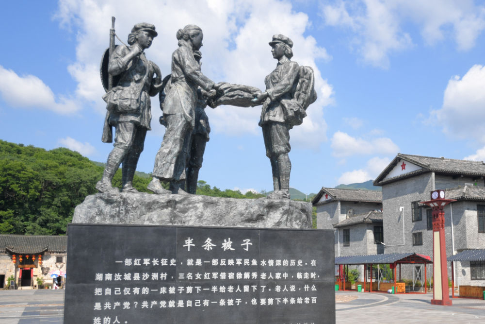
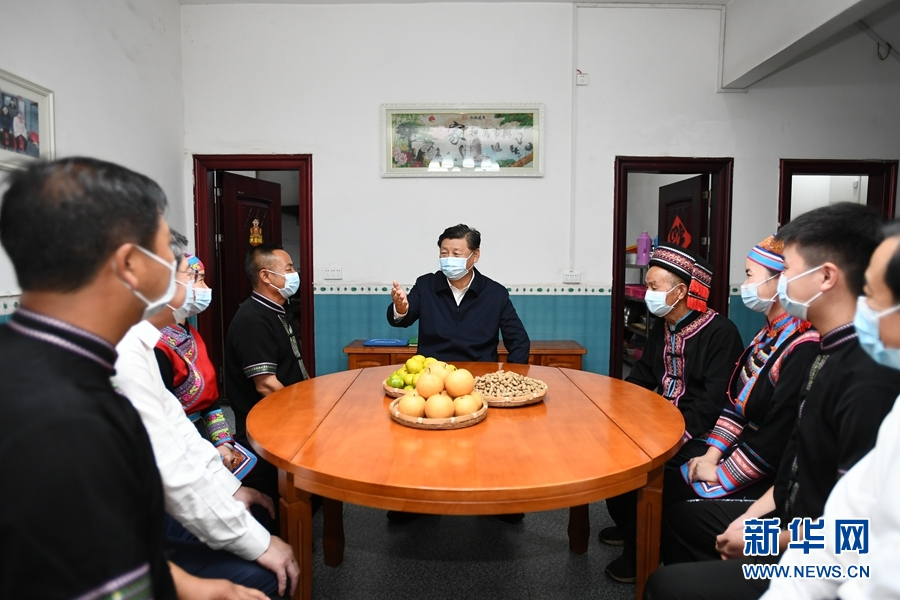
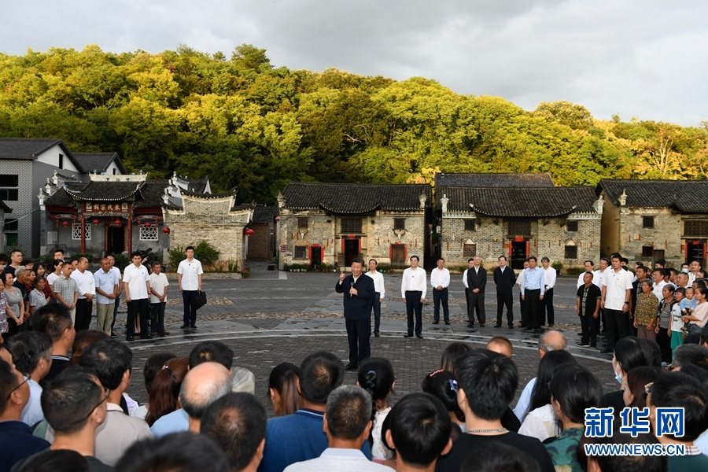
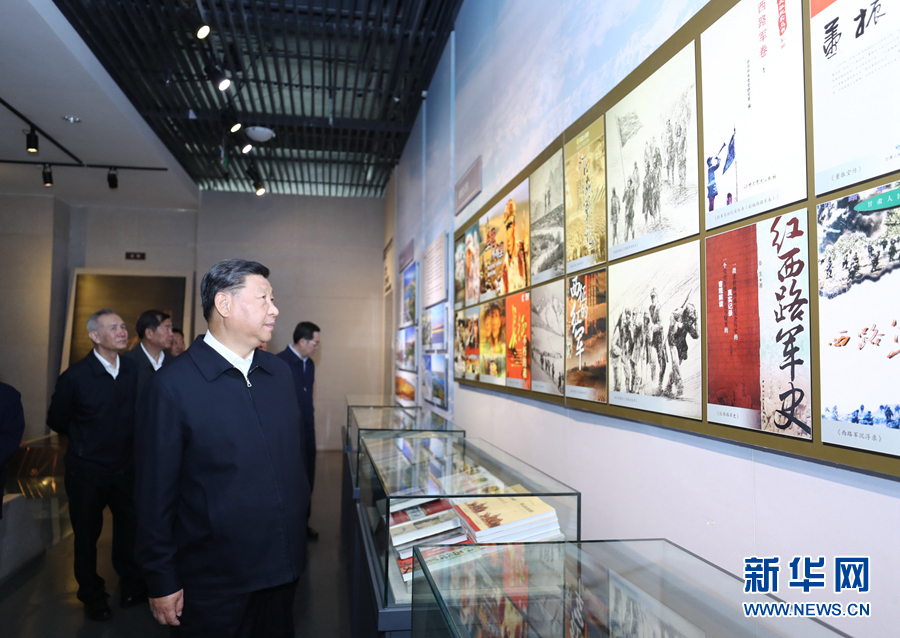

9月16日下午，正在湖南考察调研的习近平总书记来到郴州市汝城县文明瑶族乡沙洲瑶族村，参观“半条被子的温暖”专题陈列馆。
总书记此行有何深意？笔记君谈些初步的体会。

沙洲是一个瑶族人口占64％的瑶族村。16日下午，习近平总书记首先来到郴州市汝城县文明瑶族乡沙洲瑶族村考察调研。
1934年，红军长征路过这里，留下了“半条被子”的感人故事。总书记走进“半条被子的温暖”专题陈列馆，了解当地加强基层党的建设、开展红色旅游和红色教育情况。
在陈列馆，总书记指出，“半条被子”的故事充分体现了中国共产党的人民情怀和为民本质。长征途中，毛泽东同志指出，中国工人、农民、兵士以及一切劳苦民众的出路在共产党主张的苏维埃红军，我们一定会胜利。今天，我们更要坚定道路自信，兑现党的誓言和诺言，同人民群众风雨同舟、血肉相连、命运与共，继续走好新时代的长征路。
2016年，在纪念红军长征胜利80周年大会上，习近平总书记就曾专门讲过“半条被子的故事”：在湖南汝城县沙洲村，3名女红军借宿徐解秀老人家中，临走时，把自己仅有的一床被子剪下一半给老人留下了。老人说，什么是共产党？共产党就是自己有一条被子，也要剪下半条给老百姓的人。
这次到湖南考察，总书记首站就来到“半条被子的温暖”专题陈列馆，再次强调：今天，我们重温这个故事，仍然倍受感动。要用好这样的红色资源，讲好红色故事，搞好红色教育，让红色基因代代相传。

↑新华社发（陈泽国 摄）
“半条被子的故事”，深刻说明了这样一个道理：
同人民风雨同舟、血脉相通、生死与共，是中国共产党和红军取得长征胜利的根本保证，也是我们战胜一切困难和风险的根本保证。 中国共产党根基在人民、血脉在人民，“必须坚持人民至上、紧紧依靠人民、不断造福人民、牢牢植根人民”。
今年52岁的村民朱小红，是“半条被子”故事主人公徐解秀的孙子。习近平总书记来到他家看望慰问。朱小红告诉总书记，这些年他和妻子参加了村里组织的蔬菜种植、厨师技能等培训，凭着一技之长实现了脱贫，又依托景区办起了民宿。
习近平总书记指出，中国共产党的奋斗目标就是为了让人民翻身得解放、过上好生活。要始终坚持全心全意为人民服务的根本宗旨，继续为实现人民对美好生活的向往而奋斗。他希望朱小红一家在讲好红色故事、传承红色基因方面发挥积极作用。

随后，他步行来到村子广场，村民们热情欢呼着围拢过来。总书记频频向大家挥手致意，对乡亲们说，“半条被子”的故事让人民群众认识了共产党，把党当成自己人。正因为有人民群众支持和拥护，我们党才能走过辉煌历程，取得伟大成就。沙洲村是“半条被子”故事的发生地，今天我专门来这里看望乡亲们。作为一名中国共产党员，我要不断接受教育、接受洗礼。我们党坚持为人民服务，不仅仅是一句口号，而是坚持不懈的实际行动。我们即将全面建成小康社会，接下来要为全面建成社会主义现代化强国而奋斗，让老百姓生活更加富裕、更加幸福。

在一大旧址重温共产党人的初心，在井冈山阐释跨越时空的精神，在沂蒙老区感受党和人民水乳交融，在延安思考我们的优良传统和作风……党的十八大以来，习近平总书记多次强调，要把理想信念的火种、红色传统的基因一代代传下去，让革命事业薪火相传、血脉永续。
让红色基因代代相传，除了用好红色资源、讲好红色故事以外，必须重点抓好“四史”学习。
历史是最好的老师。今年“七一”前夕，习近平总书记在给复旦大学青年师生党员的回信中强调：
希望广大党员特别是青年党员认真学习马克思主义理论，结合学习党史、新中国史、改革开放史、社会主义发展史，在学思践悟中坚定理想信念，在奋发有为中践行初心使命。
在这之前，习近平总书记曾多次就“学习党史、新中国史、改革开放史、社会主义发展史”提出明确要求：
甘肃是一片红色土地，在中国革命历史进程中发挥了不可替代的重要作用。2019年8月22日，在听取甘肃省委和省政府工作汇报时，习近平总书记要求：
要运用红色资源，认真抓好“不忘初心、牢记使命”主题教育，组织广大党员、干部学习党史、新中国史，教育引导广大党员、干部准确把握“守初心、担使命，找差距、抓落实”这个总要求，增强“四个意识”、坚定“四个自信”、做到“两个维护”。

上海是我们党的诞生地，党成立后党中央机关长期驻扎上海。2019年11月2日至3日，习近平总书记在上海考察时强调：
上海要把这些丰富的红色资源作为主题教育的生动教材，引导广大党员、干部深入学习党史、新中国史、改革开放史，让初心薪火相传，把使命永担在肩，切实在实现“两个一百年”奋斗目标、实现中华民族伟大复兴的中国梦进程中奋勇争先、走在前列。
在“不忘初心、牢记使命”主题教育总结大会上的重要讲话中（全文→），习近平总书记再次对“学习党史、新中国史、改革开放史、社会主义发展史”提出明确要求：
要把学习贯彻党的创新理论作为思想武装的重中之重，同学习马克思主义基本原理贯通起来，同学习党史、新中国史、改革开放史、社会主义发展史结合起来，同新时代我们进行伟大斗争、建设伟大工程、推进伟大事业、实现伟大梦想的丰富实践联系起来，在学懂弄通做实上下苦功夫，在解放思想中统一思想，在深化认识中提高认识，切实增强贯彻落实的思想自觉和行动自觉。
近日，中共中央办公厅印发了《关于巩固深化“不忘初心、牢记使命”主题教育成果的意见》，对抓好“四史”学习作出要求：
开展党史、新中国史、改革开放史、社会主义发展史专题教育，让党员、干部学习了解党成立以来的重大事件、重要会议、重要文件、重要人物，了解党的光荣传统、宝贵经验和伟大成就，做到知史爱党、知史爱国。 综合自 人民日报 新华社 央视新闻
来自: 求是网 作者： 学而时习工作室